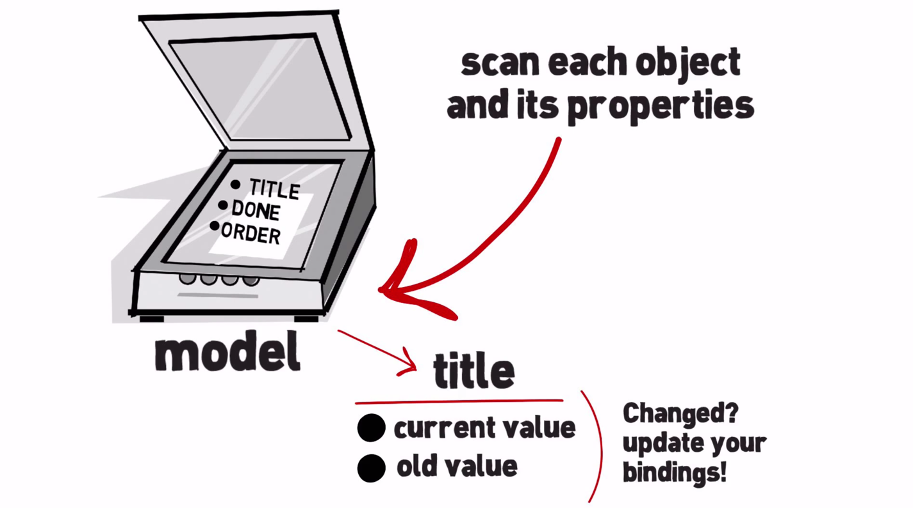
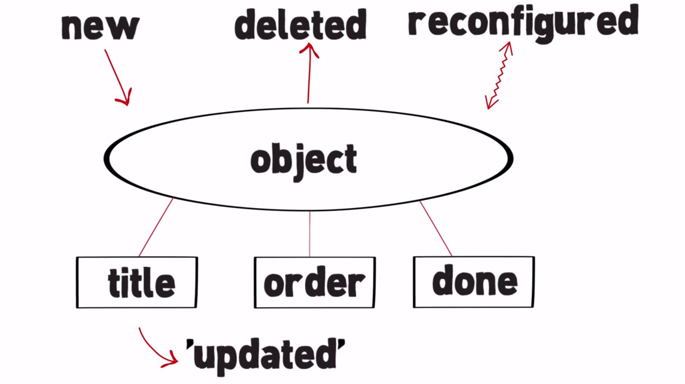
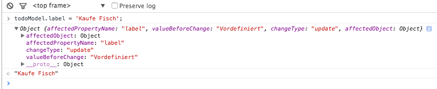
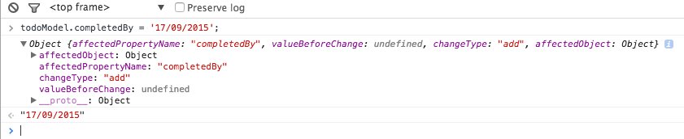
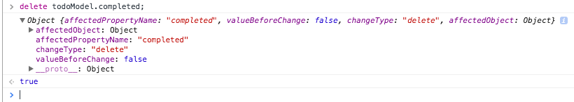
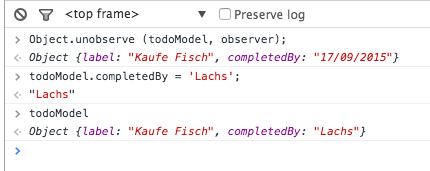

Eine Revolution ist im Anmarsch. Es gibt ein neue Erweiterung zu JavaScript, die alles was man über Data-Binding wusste verändern wird !
Mögliche Vorgehensweise:

So geht es einfacher:

Was kann Object.observe() neues?
/// Ein Model dafuer kann einfach ein Objekt sein
var todoModel = {
label: 'Vordefiniert',
completed: false
};
// Wir geben für jede Änderung am Objekt
//einen Rückruf
function observer(changeRecords){
changeRecords.forEach(function(change){
console.log({
affectedPropertyName: change.name, // Betroffene Eigenschaft, hier der Name
valueBeforeChange: change.oldValue, //Wert vor der Aenderung des Objektes
changeType: change.type, //'new', 'updated', 'deleted', 'reconfigured'
affectedObject: change.object //betroffenes JS Objekt
});
});
}
// Welches wir dann beobachten
Object.observe(todoModel, observer);



